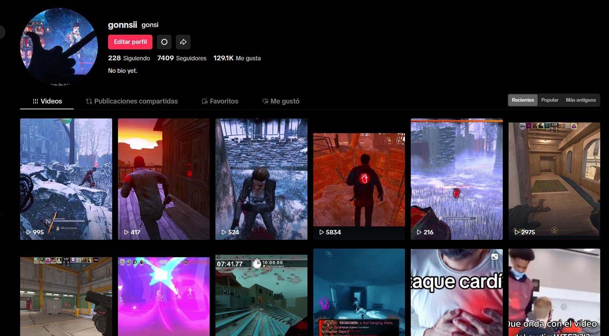
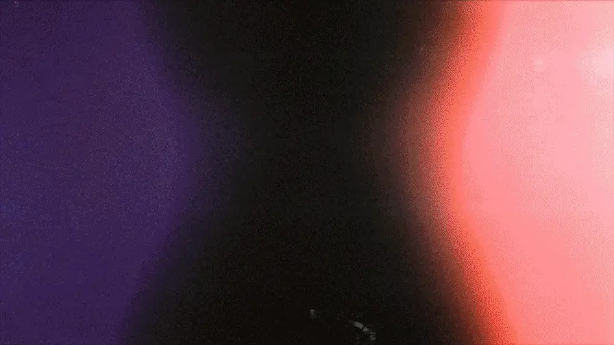

Comencé con Blender en 2023, aunque ya lo había usado varias veces en el pasado esta vez me enfoqué en la animación
23/03/2023 fue cuando hice mi primera animación Oficial en Blender
Cuando agarré más experiencia, probé otro tipo de animación, los Viewmodels, que son animaciones, pero desde una perspectiva en primera persona.
después me compré un curso de animación, donde fueron los 80$ mejores invertidos de mi carrera, todavía no terminé el curso.
Actualmente suelo hacer animaciones sin un objetivo en específico, más que seguir mejorando.
Mi mayor proyecto de VSCode, es esta misma página web, la hice con HTML, CSS y JavaScript.
Comencé a animar en Source FilmMaker en 2022, mis habilidades eran prácticamente nulas, pero igualmente me dedicaba a animar audios que me encontraba por distintos lugares.
Hay un animador al cual admiro mucho, que utiliza este software, no saca animacionestan seguido, pero cuando las hace, son prácticamente películas, por lo un día me propuse a hacerle esta animación.
Tengo una experiencia bastante aceptable con la edición de videos, generalmente porque suelo grabar y editar mis propios videos para subirlos a las redes sociales, la edición no es tan asombrosa, pero se lo justo y neceasrio para editar un video.
No me gusta usar transiciones, a menos que sean creativas y que tengan alguna relacion con lo que se está mostrando, como por ejemplo una transición con un efecto llamado "Film Burn" que es cuando se "quema" una pelicula, tendría sentido utilizarlo si se está hablando de algún filme, o un resumen de alguna serie, pero no tendría sentido usarlo al hablar de comida o sobre animales.
Comencé a usar Davinci Resolve hace varios años, ya que era la mejor alternativa gratis, no quería pagar un programa ni piratearlo, así que fué una solución bastante rentable. Como ya mecioné, la utilizo para la edición de videos para mis redes sociales, principalmente sobre gameplays o momentos que a mi parecer, son bastante buenos, pero tambien la utilizo para la escuela, cuando en alguna que otra materia, la solicitan